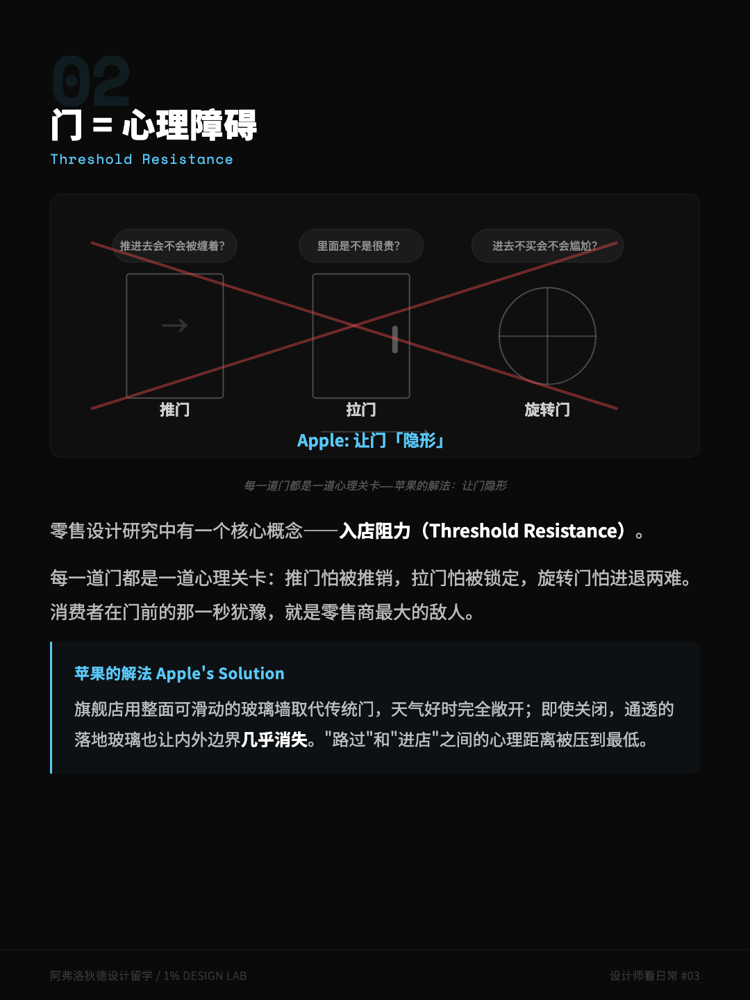
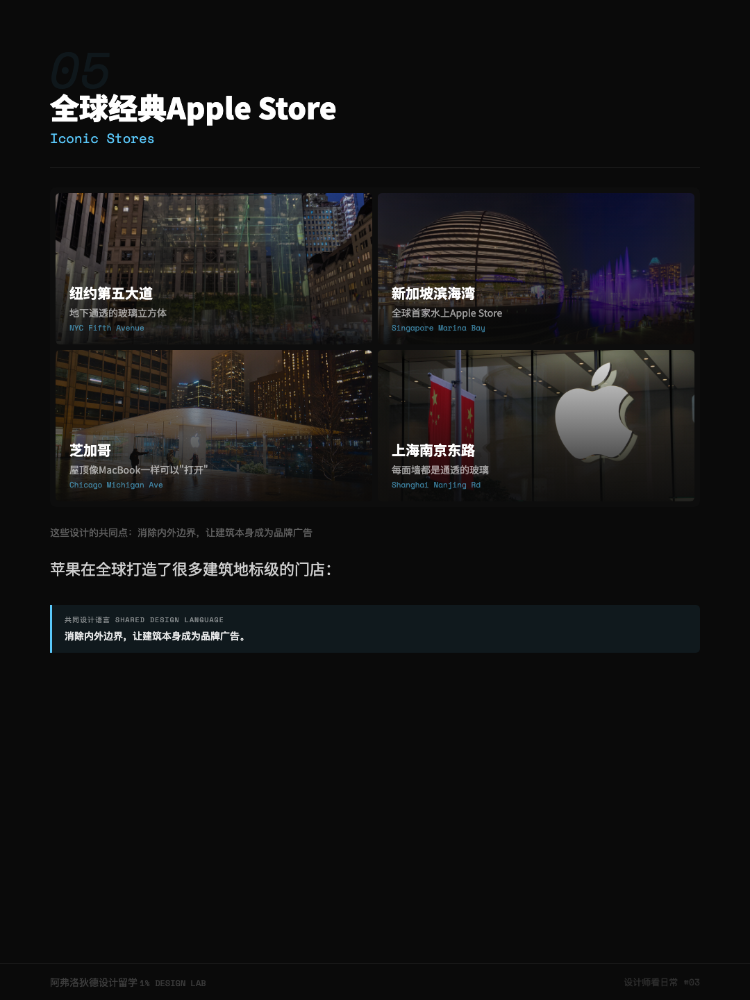

下次你路过一家 Apple Store，停下来想一件事：你是怎么「走进去」的？
你会发现，你好像没有「推门」这个动作。那扇门就在那儿，可你几乎感觉不到它的存在。旗舰店干脆用整面能滑动的玻璃墙取代了门，天气好的时候整面墙打开，里外连成一片；就算关着，通透的落地玻璃也让「路过」和「进店」之间的边界，淡到几乎没有。
我原稿里写过一句「苹果花了数十亿美元研发入口设计」。这次搬回个人网站，我先把它拎出来审：这个数，查不到出处。所以我换个说法——苹果在入口上的投入之大、用心之深，是肉眼可见的；至于精确到「几十亿」，我只能说，存疑。
别急着惊叹「苹果真有钱」。该看的是：它花这么大力气，到底在抹掉一样什么东西？答案是——你推门之前，那半秒钟的犹豫。
一、每一道门，都是一道心理关卡
零售设计里有个概念叫「入店阻力」（Threshold Resistance）。每一道门，本质上都在你心里过一道关卡：
- 要推门——「我推进去会不会被人盯着？」
- 要拉门——「里面是不是很贵，我进去了不买尴尬？」
- 旋转门——「我这身打扮，进得去吗？」
苹果的做法简单粗暴：把门「隐形」掉。阻力没了，犹豫也就没了。你走进苹果店，更像走进一个广场，而不是走进一家店。
说句实话：「入店阻力」作为概念是零售设计领域的通识；但具体到「一扇门挡掉了百分之多少的客流」，没有统一数据。我讲的是方向，不是某个精确比例。
二、玻璃幕墙，是一个巨大的橱窗
从外面看，全透明的玻璃幕墙，把整个店面变成一个巨型橱窗。
店里的每一张木桌都朝着街道摆好；产品的屏幕亮度调到，隔着马路都能看见内容；灯光经过设计，让室内比室外更亮一点，形成一个把你的视线吸进去的视觉落差。
你以为你在看手机？换个角度——是手机在「看」你，用它的亮，把你钩过去。
这种「内外边界模糊」被推到极致的，是那几个建筑地标级的门店：纽约第五大道那个地下玻璃立方体、新加坡滨海湾那个漂在水上的玻璃球、芝加哥那面能整个升起来的玻璃墙。它们的共同点：让建筑本身，成为品牌最大的广告。


三、空间梯度——从「随便摸」到「深度服务」
注意苹果店里的空间是怎么排的：
- 前区——产品展示。随便摸，没压力。你哪怕只为了蹭冷气进来，也没人拦你。
- 中区——配件区。开始有点消费的意思了。
- 后区——Genius Bar 天才吧。深度服务，高信任。
这套从前到后、从「低压力」到「高信任」的梯度，是经过设计的。一个只是路过的闲人，可以零压力进来摸两下；一个真正想解决问题的人，会一路走到后区——等他走到那儿，他对这个品牌的信任已经沿途攒够了。
没有一个销售员会在你刚进门的时候扑上来。这「不扑上来」，本身就是设计的一部分。
同一个开放空间，其实在回答四个人的诉求
- 顾客
- 我只想随便看看，别给我压力。→ 前区全开放，没人拦你。
- 产品
- 我怎么让你摸到、感受到？→ 摆在最显眼、最亮的桌上。
- 服务
- 我怎么在你不抗拒时靠近你？→ 把深度服务藏在最深处。
- 品牌
- 怎么让你进一次门就记得我？→ 让建筑本身，成为你想拍照的背景。
我把这套逻辑搬回了数字产品
苹果店是物理空间里把「零摩擦进入 + 渐进式信任」做得最好的范本。做数字产品的人，能偷三招：
- 砍掉「推门」动作：你的注册、登录、新手引导，有没有不必要的「门槛」？用户还没体验到你值不值，你就先让他填一串资料——这就是数字世界里，那扇又重又丑的门。
- 让产品自己发光：别靠说明书说服人，让用户在第一屏就看见一个亮着的、正在工作的成果。苹果不解释屏幕为什么亮，它就让屏幕亮着。
- 设计信任梯度：先让用户低门槛地「摸到」价值（前区），再引导他走向更深的承诺（后区）。一上来就要求深度授权，等于把 Genius Bar 搬到了门口，吓跑所有人。
下次你设计一个「入口」，给自己三个问题
App 的首页、落地页、注册流——都是你设计里的那扇「门」。
- 找那扇门：用户要「推」几下，才能真正摸到你的价值？每多一下，就多一批人转身。
- 找那盏灯：用户第一眼看见的，是一个亮着的成果，还是一张说明书？
- 找信任梯度：你是在让人「先体验、再承诺」，还是「先承诺、才让你体验」？前者是苹果，后者是你填不完的表单。
- 「入店阻力」（Threshold Resistance）、零售空间中的「空间梯度」与橱窗化设计，属于零售设计领域的公开讨论。
- 纽约第五大道、新加坡滨海湾、芝加哥等 Apple Store 的建筑特征均为公开可查的事实；Jony Ive 与 Angela Ahrendts 曾主导苹果零售设计，也是公开记录。
- 原稿中「数十亿美元研发入口」等表述无法查证出处，已在文中标注存疑。
- 本文基于公开可见的门店设计做分析，不代表 Apple 官方设计意图。